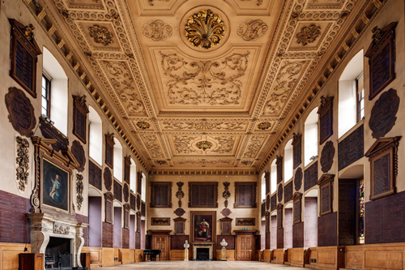
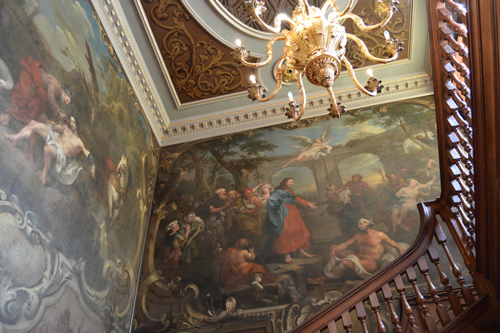
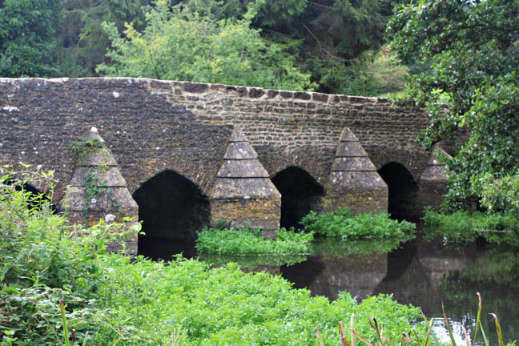
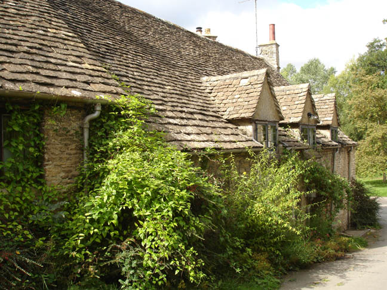
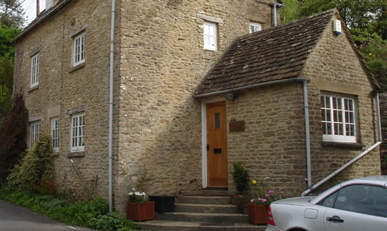
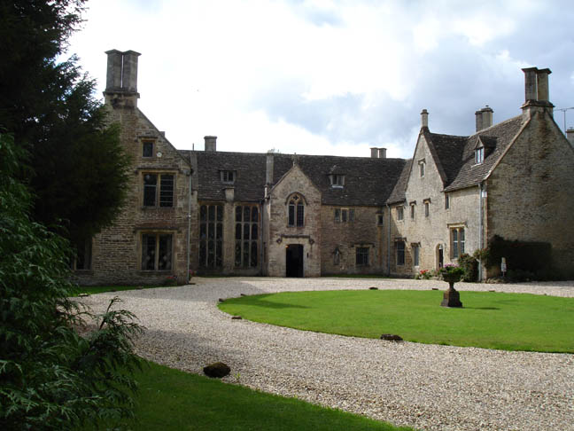
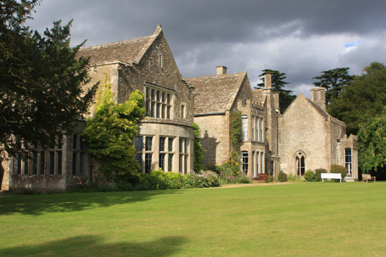
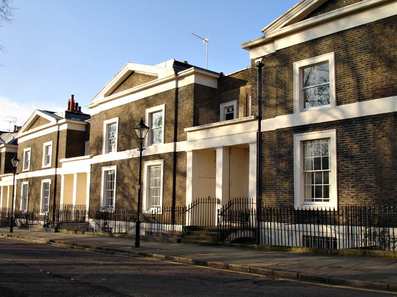

St. Bart's Hospital where John Cavendish visits Hastings who is recovering from his leg injury received during World War I.

Hastings and Cavendish depart via the William Hogarth staircase in St. Bart's Hospital.

The village of Easton Grey in Gloucestershire doubles as 'Styles St. Mary'.

Poirot's cottage.

The annex on the right was used as 'Styles St. Mary Post Office'.

Chavenage House, Nr.Tetbury in Gloucestershire is used as 'Styles Court'. This location was unavailable for the filming of 'Curtain: Poirot's Last Case' when an alternative had to be found.

Back of the house.

Lloyd Square, London WC1. Poirot & Hastings walk through the square during the closing scenes.